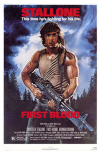

Сильвестр Сталлоне
Сильвестр «Слаевич» Сталлоне — расовый американский порнушник, как бе актер, сценарист, продюсер, режиссер и тд. и тп. Народным массам известен как Итальянский Жеребец, Рокки и Рэмбо.
Фильмы
Рокки отымел отметелил очередного парня
Сильвестр Сталлоне в отличие от губернаторов Калифорний, квадратным телосложением не отличается. Посему, в тех эпизодах, где Шварц сломал бы пяток челюстей и пробил пару стен хуемкулаком, Слай сначала долго огребает от всех желающих, а потом уже ломает пяток челюстей и пробивает стены кулаком, но как бы из последних сил. Наиболее известны серии «Рокки» и «Рэмбо». Сильвестр забавно пробился в звёзды — написал сценарий к Рокки, а гешефт взял не деньгами, а натуробменом: попросил себе первую роль. Начинал же свою кинокарьеру жадный итальяно-американский коротышка в 1970 году в порнофильме «Вечеринка у Китти и Стада». А первой ролью вне порнухи была эпизодическая роль в комедии ЕРЖ Вуди Аллена «Бананы», в которой Слай сыграл хулигана, насилующего в метро старушенцию.
Рокки
Эпичная серия фильмов о боксере Рокки в шести частях.
Рокки-1. — первый большой фильм с участием Сильвестра Сталлоне, который выдвинул актера в ранг звезды. Считается одним из лучших фильмов о спорте. Действительно неплохой фильм о боксере-неудачнике, в котором есть ряд совершенно изумительных режиссерских решений (бег по лестнице, отработка ударов по тушам и т. д.)
Рокки-2. — уныл и повторяет все мысли из первой серии.
Рокки-3. — к сожалению, этот фильм вообще полностью сделан из хуйни и уныния.
Рокки-4. — Эпичнейшая развесистая клюква, с прекрасной режиссурой, операторской работой и саундтреком. Здесь мы впервые видим на экране русского боксёра истинного арийца аДольфа Лундгрена в роли советского капитана (Красной Армии? КГБ?) Ивана Драго, который в последствии стал отдельным мемом на территории России. Алсо, прозвище «Драго» считается в среде российских спортсменов комплиментом.
Также в фильме имеется Бриджит Нильсен, в роли жены Драги Людмилы (сей факт не может не радовать, так как в предыдущих «Рокки» все женщины ограничивались анемичной Талией Шайр).
Рокки, вместо того, чтобы нормально тренироваться, летит в СССР и поселяется в каких-то унылых ебенях (в Википедии написано: «В самую отдаленную часть Советского Союза»(на самом деле в фильме показано название этого места-«Красногурбинск», но куяндекс и гугл на своих картах не находит этот не населенный пункт, не иначе как…..), куда это интересно, на Камчатку что ли?)
В этих ебенях он живет в одном сарае с нигрой-тренером, колет дрова и бегает по сугробам, и в результате побивает Драго, который качался на нормальных тренажерах (если бы на колке дров действительно можно было поправить здоровье, то все колхозники в России были бы богатырями. Хотя, возможно, тут все дело в нигре, с которой он жил в одном сарае.)
Агенты КГБ в ушанках, крестьяне на санях и прочее. Во время матча, проходившего в СССР зал скандирует «Fighting».
Кстати в этом фильме Слай отхватил реальных пиздюлей от Дольфа. В одном интервью Дольф сообщил, что якобы Слай решил попробоват реальный поединок с ним перед съёмками боёв, Лунгрен изначально отрицал, мол опасно это, но Слай настаивал и донастаивался получив под дых апперкот будучи зажатым в угол в течение первых 15 секунд боя. После боя Слай убрался домой отменив съёмки, ночью ему стало хуёво и его отвезли в больницу. По одним данным он отлежался в больнице 4 дня, по другим 9 дней.
Рокки-5. — пятый фильм, повествует нам о том, как Рокки дерется с одним из своих учеников. Кому-то уныло, но основная мысль ясна: нечего тратить все свое время на неизвестного парня с улицы, когда растет свой сын со своими проблемами, тем более, что в отличие от сына способный ученик может и предать (что и случилось).Алсо ученика играет очень сильный боксёр и бывший чемпион мира по версии WBO Томми Моррисон, так что могла повторится ситуация из предидущего абзаца, но видно Слай не настаивал на спаринге, такие дела.
Рокки Бальбоа. — вообще-то этот фильм должен был по логике называться «Рокки-6», но его авторы смекнули что цифра 6 (и более) в названий фильма это уже некошерно. Почти весь этот фильм состоит из непомерных меланхолических длиннот и лишь сам финальный поединок, отменно снятый, способен вызвать долгожданное воодушевление. Неожиданный энергично-дружелюбный эндшпиль многим придется по вкусу, но здесь возникает законный вопрос: неужели зритель должен безропотно взирать на застарелую и унылую тягомотину с играющим на одних распальцовках Сталлоне (плохо копирующим свою лучшую актерскую роль — гротескного мафиозо из лэндисовского «Оскара» 1991 года), прежде чем добраться наконец до ритмичного и яркого зрелища? Будем надеяться что это последний фильм этой серии (в общем-то, сам Рокки в конце говорит Полли именно об этом: «Я выпустил зверя. Все, зверь на свободе»).
Что запомнилось
- Во всех фильмах «Рокки» всегда использовался один и тот же киноэффект замедленной драки. Кулак медленно входит в рожу противника, с рожи летят брызки пота, из рота головы вылетают ошмётья крови и слюней. Подобной ириэльной детализации не сделали даже в этой вашей «Матрице».
- Примерно одна общая идея на все фильмы из данной серии: «Я хороший, он плохой. Я победю! испаследнихсил!» (Пиздеж. Идея первого фильма: «Я НИЧТОЖЕСТВО, А ОН — ЧЕМПИОН. Как мне его победить?» Собственно перед боем, когда он беседует с Эдриан и раскрывается суть фильма. Вторая часть это логическое завершение первой. В третьей части главной идеей выступает коммерциализация спортсменов. Идея плохого/хорошего только в четвертой части обыгрывается.)
- Сплошняком все окружение главного — дегенераты. Будь они моей женой, я бы повесился. © Анонимус.
Рэмбо

Рэмбо. Первая кровь.
Кинематографический эпик про жизнь и удивительные приключения ветерана Вьетнамской воины Джона Рэмбо в четырех фильмах.
Первая кровь — в целом неплохой фильм, даже по сегодняшним меркам. Незатейливая история про немного заторможенного ветерана вьетнамской войны Джона Рэмбо, которого травит местечковый шериф, охуевший от чувства собственной значимости. В результате Рэмбо развязывает небольшую войну местного масштаба, по итогам которой отправляется в каменоломни на каторжные работы за покушение на жизнь убийство сотрудников правоохранительных органов. Фильм создаёт впечатление правдивости изложенной в нем истории, поэтому, наверное, не устарел до сих пор. Также этот фильм дал путевку в жизнь такому явлению как «Нож Рэмбо»: устрашающего вида тесак с пилой и полой ручкой для складирования ниток и прочей хуиты. А еще «Он хотел, чтобы его любили» — это слоган именно этого фильма, потом уже благополучно спизженый Бондарчуком. Так-то.
Рэмбо: Первая кровь. Часть 2 — тут всё намного хуже. Фильм превратился в обыкновенную клюкву, и если бы не присутствие в картине советских десантников во главе с подполковником Подовским, смотреть его не стоило бы вообще. Просмотр рекомендуется начинать с момента погружения Сталлоне злыми вьетнамцами в глубокую лужу с херней и свиным говном, что как бы символизирует. Тут же появляются советские десантники в какой-то чудной форме. Далее подполковник Подовский пытает Рэмбо током и ножиком с таким профессионализмом, как будто он всю жизнь служил в НКВД у Берии. Что-то говорится на чистом русском языке, потом Рэмбо убегает убигает таки, успевая при этом прихватить свой чудо-ножик и чудо-лук. Дальше можно не смотреть, и так все понятно. Википедия сообщает нам о финале этого фильма: «В конце концов Джона Рэмбо награждают медалью и отпускают на все четыре стороны.» Лучше и не скажешь.
Рэмбо 3 — фильм был запрещен к показу в СССР. Клюква еще более развесиста, надпись перед титрами: «Этот фильм посвящается доблестному народу Афганистана» как бы говорит нам: «Осторожно — хуита!». Советские солдаты показаны еще более тупыми и безжалостными, советский полковник Лисицын Зайцын ещё более отвратителен. У Рэмбо опять чудо-нож и чудо-лук. К глубокому сожалению, в этой серии Слая не окунают в лужу с говном, так что смотреть совершенно нечего. Есть мнение, что Рэмбо удалось победить такую кучу советских воинов только потому, что их командир отдавал им приказы на таком плохом русском языке, что они никак не могли его понять и поэтому просрали войнушку. (А еще Анонимус припоминает, детский шок, от выпиливания Ми-24 (который Крокодил) с лука, с бомбой на стреле!! Это конечно не Чаке, но...))
Джон Рэмбо — последний из пока вышедших в свет фильмов со Слаем, в котором он доказал анонимусу, что не уныл (он же и режиссёр). В фильме присутствуют: «сюжет», омг-помыслы о цене жизни людей, станковый пулемёт 50 калибра, снайперская винтовка Баррет тоже 50 калибра, 236 трупов, много крови и расчленёнки. Сюжет какбэ намекает нам, что Слай над ним не думал вовсе, а боевые сцены без сюжета — хуета, поэтому сюжет о доставке членов Красного Креста в страну, раздираемую гражданской войной, хуета чуть больше, чем полностью. Главной же особенностью фильма, за которую его уважает любой тру анонимус — последние 15 минут фильма, где Слай устраивает бойню с помощью вышеназванного пулемёта. Заняв правильную тактическую позицию, Слай перестрелял целый полк узкоглазых, сделав это так красиво, что Леонид, конечно, не курит в сторонке, но пожимает руку. Собственно, фильм стоит посмотреть хотя бы ради последних 15 минут, ибо сейчас редко такое снимают. П.с. фильм избавился от бреда прошлого — патроны в магазинах у людей кончаются, Слая в конце подстрелили в руку (но ему похуй), сам Сталлоне даже перезаряжал свой пулемёт, что для Голливуда — большой прогресс.
P.S.. На этот Рэмбо и вообще фильмы подобной тематики была в 1993 году выпущена замечательная пародия под названием «Горячие головы-2», в которой американский пилот-ас Топпер Харли сотоварищи, получает секретное задание по спасению заложников из лап Саддама Хусейна. Выполняют они его, не давая любителям настоящих, годных пародий, перевести дух от смеха.
Кобра
Лидер недельного проката 1986 года. Слай — исполнитель роли ГГ и автор сценария. Лос-Анджелесский лейтенант полиции Мэрион Кобретти по прозвищу Кобра специальными методами борется с различными маньяками, убивающими людей во имя только им ведомых целей. Попутно спасает Бригитту Нильсен. Анонимус любит этот фильм за каноническую сцену сжигания негодяя в плавильной печи (см. выше), а также за следующие диалоги:
- — Назад! У меня бомба! Я тут все взорву!
— Вперед. Я тут не закупаюсь. Взрывай, это не мой магазин.
(Употребляется при посещении супермаркетов.)
- — Суд — он цивилизованный. Да, свинья?
— А я — нет. Здесь суд кончается, и начинаюсь я, …сосунок.
- Ты — болезнь. А я — лекарство
Прочие
Лос-Анджелес в 2032 году, из фильма Разрушитель.
Танго и Кэш — боевик наполовину со Сталлоне. Там он изначально ведёт бизнес по-итальянски, и при этом ещё халтурит копом. В сабже присутствуют тачка-с-прокачки и пэврэствройка с человеческим лицом Савелия Крамарова, драму из-за кадра нагнетает реживысcёр Андрон Кончаловский, вонербразер сами знаете кого. И да, фильм относится-таки к тру восьмидесятым.
Судья Дредд — Nuff said.
Тюряга (Взаперти) — Сталлоне здесь играет заключенного Леоне, которого Внезапно перевели в другую тюрьму, начальник которой давно точит зуб на героя. Слай невозбранно огребает от жирных охранников-скотов и местной гопоты. Не выдержав такого отношения к себе, Леоне становится героем решается на побег, чтобы потом добраться до начальника тюрьмы и добиться справедливости.
Страна полицейских — боевик про коррумпированных блюстителей порядка. Один из самых крутых полицейских по ошибке убивает безоружных обкурившихся нигр, но сослуживцы его отмазывают. Всех, кто бурлит по этому поводу, поочередно выпиливают. Слай играет скромного шерифа, который грустно смотрит на всё это говно, но понимает, что ничего не может поделать. Однако и его терпению приходит конец, когда зажравшиеся полицейские заживо сжигают его подругу, а главарь всей этой шайки затыкает героя Слая, пытавшегося возражать. Он хватает дробовик и собирается анально покарать негодяев вернуть немного законности в город…
Стой! А то мама будет стрелять… — больше комедия, чем боевик. Успешный полицейский Джо Борновски собирается отправить за решетку пару-тройку негодяев и наконец закадрить свою начальницу Гвен. Но всё усложняется, когда к нему в гости приезжает его мамаша, которая откармливает его плюшками и ватрушками. Она так и норовит сунуть нос в дела сына, как профессиональные, так и личные. Взбесила Джо, показав его детские фотки, где он на горшке, всему участку. Но при этом она является важным свидетелем в одном деле, поэтому горе-сынуле приходится везде таскать её с собой…
Разрушитель — Сталлоне здесь почти не воен, и играет швею. Количество крылатых фраз здесь перевешивает количество их во всех остальных фильмах со Сталлоне вместе взятых. Отдельно доставляет винрарный нигра Саймон Финикс (aka Уэсли Снайпс). Последний фильм в американском кинематографе, где белый - хороший, а нигра - плохой. Так же упоминается о библиотеке президента Шварцнеггера, что какбэ намекает. Наконец, многих и по сей день волнует вопрос: как же на самом деле выглядели те самые "ракушки" (которые вместо туалетной бумаги) и как ими пользовались?
Убийцы — триллер, в котором два киллера, сыгранные Сталлоне и Антонио Бандерасом, весь фильм пытаются убить друг друга. Алсо в фильме засветилась Джулиана Мур, в роли хакера Электры. Сценаристы тут брат и сестра Фаччофски, если что.
Скалолаз — Сталлоне играет простого альпиниста, живущего в горных ебенях. В этих ебенях он мирно спасает туристов, роняет людей в пропасть и вообще ведёт здоровый образ жизни. Внезапно группа негодяев сбрасывает с самолета практически ему на голову три чемодана с наличными, а потом и сами негодяи падают тоже практически ему на голову. Сообразив, что бегать по горам самим вовсе необязательно, негодяи отправляют Сталлоне на поиски утраченных чемоданов. И совершенно напрасно, так как Слай абсолютно бездарно похерил всю найденную наличность: первый чемодан он сбросил в пропасть, содержимым второго топил печку, якобы чтобы не замерзнуть, а третий чемодан просто рассеял по ветру, швырнув мешок с деньгами в вертолётный винт для лучшего эффекта.
Ночные ястребы — полицейский триллер, в котором Сталлоне в роли детектива ловит Рутгера Хауэра в роли международного террориста. Концентрированный винрар, жаль, что малоизвестный. Изумительная игра Сталлоне, Хауэра и Персис Кхамбатта (отмороженной на всю башку подруги главного плохиша), отличные диалоги. Примечателен финальной сценой, где Слай ловит плохиша «на живца», переодевшись собственной женой.
Гонщик - "the worst car film ever made, and a terrible depiction of auto racing". Nuff said. Феерический высер о восхождении молодой звезды расовой американской гоночной серии CART. В фильме наличествуют все элементы аркадных гоночек, как, например, езда на болидах по городу с распугиванием семейных седанчиков налево и направо, летающие канализационные люки и ещё много чего весёлого и интересного. Даже звёздный подбор актеров (Берт Рейнольдс, Тиль Швайгер, Роберт Шон Леонард и другие) не спас фильм от провала в прокате. Алсо, в камео засветились пилоты CART и Формулы-1 Жак Вильнёв и Хуан-Пабло Монтойя.
Дневной свет - фильм-катастрофа OH SHI--. Бандиты, съёбывающиеся от полиции, в тоннеле, под Гудзоном, врезались в грузовик с токсичными отходами. Взрыв - Огонь - Обвал - Пипл взаперти - Тоннель затапливается тем самым Гудзоном. ВНЕЗАПНО наш Сильвестр проезжал мимо в качестве водителя такси. Времени мало, а спасатели срут кирпичами, т.к. не знают как начать спасательную операцию. Тут-то и приходит на помощь Сталлоне, который оказывается до этого был местный Шойгу, но после смерти нескольких спасателей был отстранён. В общем дальше всё предсказуемо. Фильм не является шедевром, но также не полная хуита. Спецэффекты Декорации откровенно слабы. Непонятно куда был потрачен бюджет 80 миллионов (даже окупился!) (для сравнения в этом же году вышел День независимости (75кк)). Справедливости ради стоит отметить 20 миллионов зарплату у Слая, против 5 у Смита.
Интересные факты
- Конкурс Золотая малина посчитал (и совершенно заслужено) Сталлоне худшим знаменитым актёром двадцатого века. Актер целых 9 раз удостоился наград Золотая малина — за худшие роли. 20th Annual RAZZIE «Winners» Release
- Рост Сталлоне около 5 футов и 9 дюймов, то есть примерно 177 см.
Первый фильм с участием Сталлоне был снят в 1970 году, назывался «Итальянский жеребец» и являлся порнофильмом. В фильме «Рокки-3» на его накидке также есть надпись «Итальянский жеребец» (Italian Stallion). Специально для тех, кто ни одной части «Рокки» не смотрел, но очень любит русскую Педивикию: Итальянский Жеребец — не какая-то там пасхалка из «Рокки-3», а полуофициальное прозвище, собственно, самого Рокки, активно упоминавшиеся с самой первой части фильма. Прон «Итальянский Жеребец» же — переизданная хитрыми порнодельцами «Вечеринка у Китти и Стада» (кстати, упомянутая чуть выше, в копипасте из «Фильмов 80-ых», с которой ты тоже, судя по всему, не ознакомился).- У Сталлоне при рождении был частично поврежден нерв левой половины лица — часть щеки, губ и языка актера так и остались парализованными, впрочем невнятная речь, ухмылка и большие унылые глаза стали в дальнейшем его визитной карточкой.
- Еврейская мамаша Сталлоне недавно провозгласила себя… «попологом», то есть специалистом, который может составить психологический портрет человека по отпечаткам его ягодиц.
- Слай был трудным ребенком — его выгоняли из школ более 10 раз, в основном из-за его поведения, хотя и оценками он тоже не блистал. В 15 лет, первоначально оставленный после развода родителей с отцом, Сталлоне переехал к матери и стал учиться в специальной школе для трудных подростков.
- Сценарий «Рокки» (Rocky) Сильвестр написал за несколько дней.
- Когда на руках у Сталлоне был готовый сценарий «Рокки», будущая звезда жила в фургоне на 20 долларов в день.
- Сталонне был признан виновным в незаконном ввозе запрещенных медицинских препаратов на территорию Австралии. 48 препаратов с гормоном роста обошлись актеру штрафом в размере 18 тыс. долларов США.
Алсо
Расовые американские аниматоры Трей Паркер с Мэтом Стоуном, не упустили возможности поиздеваться над неразборчивой речью Слая, выпустив серию Южного парка под названием «Винг», в которой Сильвестр Сталлоне вынужден общаться с детишками — Стэном, Кенни, Кайлом и Катменом при помощи переводчика.
Алсо, Сильвестр Сталоне - тролль с demotivation.ru, постоянно постящий комментарии ко всем демотиваторам с текстом: "Ты не хочешь стать моим фиктивным мужем?". Что удивительно, пока ещё никто не согласился.